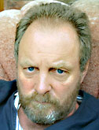

Ian Pollock: biography
| Born 1950, Cheshire; son of Gordon Pollock, traditional claypipe manufacturer. Educated at Thorn Grove Primary School, Cheadle Hulme, Cheshire. Eleven-plus failure and no-hoper. Woods Lane Secondary Modern School. Fifteen-plus transfer to Moseley Hall Grammar School, Cheadle, Cheshire; A-levels: maths, physics, chemistry - dropped maths for art (eventual grade E). Foundation at Manchester College of Art and Design. BA First Class Honours, Manchester Polytechnic, 70-73. Royal College of Art, Master of Arts Degree 73-76. Honorary Degree of Doctor of Arts, Wolverhampton University, conferred 3 September 2001. |
| He has been freelancing for the last thirty five years. He lived in London for twenty years, now lives as a recluse in Macclesfield on the edge of the Peak District with his wife: painter Helen Clapcott. He works mostly for magazines and newspapers and appears regularly in the "quality press". He was commissioned to design "Tales of Terror" — four postage stamps for the Royal Mail which were issued in May 1997. "Work still finds me up 'ere..." says Pollock dribbling along the stem of an old clay pipe. "Work for anyone," he says, "even the taxman." |
| Now a bitter, pathetic creature, he says he's highly professional and underpaid and is worried his work is showing signs of Gilles de la Tourette Syndrome." |
| February 2011 |